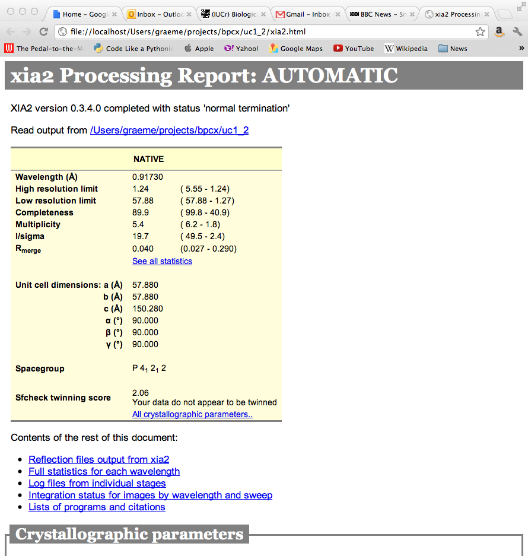

Program output¶
As the program runs the key results are written to the screen and recorded in the file xia2.txt. This includes everything you should read and includes appropriate citations for the programs that xia2 has used on your behalf. There is also a file xia2-debug.txt which should be send to xia2.support@gmail.com in the event of program failure. There are also two sensibly named directories, LogFiles and DataFiles, which will be discussed shortly.
xia2.txt¶
By design, the program output from xia2 includes only the information that is critical to read, as will be shown for a 450 image Pilatus 2M data set recorded from a thaumatin crystal. The results from indexing are displayed as lattice / unit cell:
------------------- Autoindexing SWEEP1 --------------------
All possible indexing solutions:
tP 57.60 57.60 149.51 90.00 90.00 90.00
oC 81.45 81.46 149.51 90.00 90.00 90.00
oP 57.59 57.60 149.50 90.00 90.00 90.00
mC 81.46 81.45 149.50 90.00 89.95 90.00
mP 57.60 57.59 149.53 90.00 89.93 90.00
aP 57.59 57.61 149.52 89.93 89.99 89.99
Indexing solution:
tP 57.60 57.60 149.51 90.00 90.00 90.00
where in each case the solution with the lowest penalty is displayed. The results of integration are displayed as one character per image - which allows the overall behaviour of the data to be understood at a glance. While mostly ’o’ is usually a good indication of satisfactory processing, ’%’ are not unusual, along with ’.’ for weaker data. If the output consists of mostly ’O’ then it may be helpful to record a low dose data set. The output includes a convenient legend, and looks like the following:
-------------------- Integrating SWEEP1 --------------------
Processed batches 1 to 450
Weighted RMSD: 0.26 (0.09)
Integration status per image (60/record):
ooooooooooooooooooooooooooooooooooo.oooooooooooooooooooooooo
ooooooooooooooooooooooo.ooooooooooooooooooo.ooooooo.oooooooo
ooo.o.ooooooo.oooooooooooooooooooooooooooooooooooooooooooooo
oooooooooooooooooooooooooooooooooooooooooooooooooooooooooooo
oooooooooooooooooooo.ooooooooooooooooooooooooooooooooooooooo
ooooooooooooooooooooooooooooooooooooooooooooooooooo.oooooooo
ooooooooo.oooooooooo..ooo.oooooooooooooooooooo.ooooooooooooo
oooooooooooooooooooo.oooooooo.
"o" => good "%" => ok "!" => bad rmsd
"O" => overloaded "#" => many bad "." => blank
"@" => abandoned
Mosaic spread: 0.140 < 0.189 < 0.290
HTML pages¶
If xia2html has been run there is a nicely formatted html version of this report, which includes graphical representation of some of the log file output from e.g. Aimless. Loading up xia2.html will give (hopefully self documenting) results as shown below. If you have manually run xia2, immediately running xia2html in the same directory will generate this.
